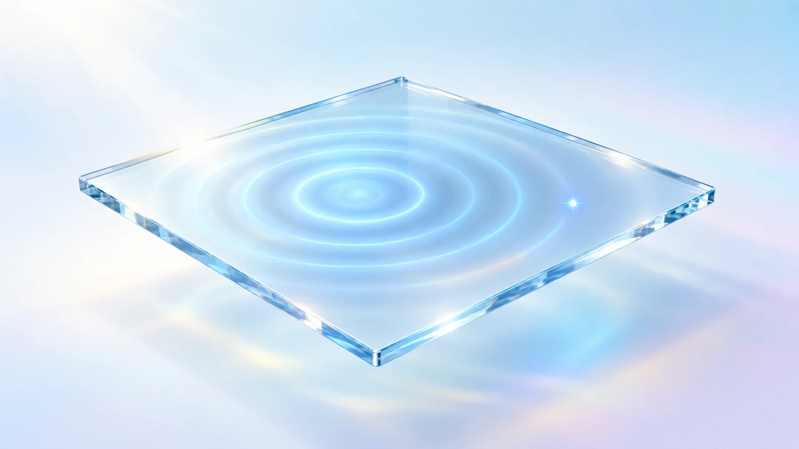
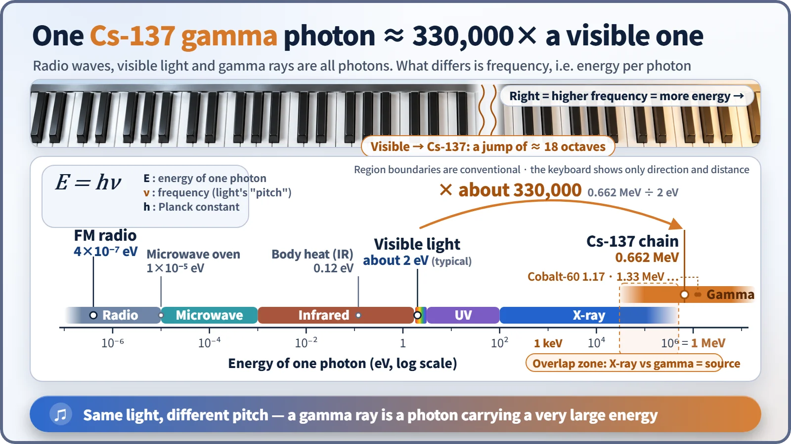
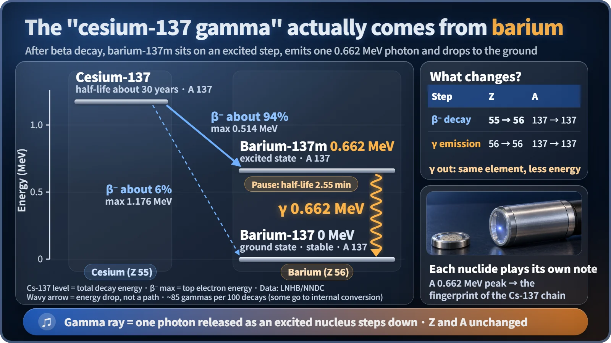

Nuclear & Radiation Basics · 014
If It's Light, Why Does It Click? — Gamma Rays: Particle or Light?
A gamma ray is a high-energy photon from an excited nucleus: light that spreads like a wave yet is counted one click at a time.

A gamma ray is light and, at the same time, behaves like a particle called a photon. It is a high-energy photon with no charge and no mass, emitted when an excited atomic nucleus drops to a lower energy level, so it carries away energy without changing the element. [1]
Light that keeps a beat?
Hold a radiation detector near a small cesium source (a sealed sample of radioactive material) and you hear it: click, click-click, click. Each click is the detector catching one gamma ray.
Isn't that odd? We're told gamma rays are a kind of light. Light ought to pour in like a smooth wave, yet the detector counts it off one beat at a time. So which is it: are gamma rays particles, or are they light? Short answer: both. To see what that means, let's borrow some ideas from music.
One song, two ways to write it down
A song can be recorded as the wavy waveform you see in audio-editing software, where the number of vibrations per second (the frequency) sets the pitch. It can also be written as sheet music, where each note is separate and countable. Same song: one version is a continuous wave, the other a series of individual notes.
Light works the same way. Light is an electromagnetic wave, electric and magnetic fields rippling together, so it can overlap with itself and make interference patterns. But whenever light exchanges energy, it does so in whole lumps. Each lump is a photon.
E = hν
E is the energy of one photon, ν (the Greek letter nu) is the frequency, and h is Planck's constant, a tiny fixed number. In musical terms, the "pitch" of light sets the energy of each photon. Bright light doesn't mean a higher pitch; it means more photons arriving every second. [2]
One honest caveat: sound is air molecules vibrating. There are no "sound particles," and pitch doesn't set the energy of a sound. The rule that frequency fixes the energy of each lump belongs to light alone. Music is only a mental picture.
330,000 times higher: where gamma rays sit
Photon energy is measured in eV (electronvolts): the tiny energy one electron gains when pushed through 1 volt. Here is light's full keyboard.

An FM radio photon carries about 0.0000004 eV, a microwave-oven photon about 0.00001 eV, and visible light about 2 eV. The gamma ray from the cesium chain carries 0.662 MeV, or 662,000 eV: roughly 330,000 times one visible photon. In frequency terms that is about 18 octaves higher. A full piano spans a little over 7 octaves, so this note rings far beyond the right-hand end of the keyboard. The gamma rays of cobalt-60, used in hospital radiotherapy, are higher still, at 1.17 MeV and 1.33 MeV. [3]
Because each note is so high, gamma rays show their particle side far more strongly, which is why a detector can count them one click at a time. Their wavelength is only about 0.002 nm, much smaller than an atom, so they penetrate deep into matter. Nuclear plants block them with thick lead, concrete and water; how shielding works is a separate story.
Who plays the note? The nucleus and its staircase
A nucleus has its own staircase of energy levels. Right after alpha or beta decay, it often stops one step above the bottom, in an excited state. When it drops to the ground, it releases the height of that step as a single photon: a gamma ray. That's why gamma rays usually follow alpha or beta decay.

Cesium-137 (half-life about 30 years) beta-decays about 94% of the time into barium-137m; the remaining roughly 6% goes straight to ground-state barium-137. The "m" stands for metastable: a nucleus lingering on an excited step. With a half-life of about 2.55 minutes, this barium emits a 0.662 MeV gamma ray and settles into barium-137. So "cesium's gamma ray" is, strictly speaking, a note played by cesium's daughter, barium. [4] [5]
| Step | Protons (Z) | Mass number (A) | Element |
|---|---|---|---|
| Beta decay: Cs-137 → Ba-137m | 55 → 56 | 137 → 137 | changes |
| Gamma emission: Ba-137m → Ba-137 | 56 → 56 | 137 → 137 | stays the same |
A gamma ray has no charge and no mass, so the element does not change. That is the crucial difference from alpha decay, which throws out a helium nucleus, and beta decay, which throws out an electron.
Because the height of each step is fixed for a given nuclide, its gamma energy works like a signature note. A peak at 0.662 MeV says "cesium-137 chain." Identifying nuclides by the pitch of their gamma rays is called gamma spectroscopy, and it's widely used in environmental monitoring and reactor coolant analysis.
How is this different from an X-ray? Not the pitch, the player
"X-rays and gamma rays are split by energy, right?" No. What separates them is their source: a photon from the nucleus is a gamma ray; a photon from electrons outside the nucleus is an X-ray. Their energy ranges overlap. The gamma ray of americium-241 (59.5 keV) is similar to many diagnostic X-rays, while the X-rays from a radiotherapy accelerator reach several MeV, higher than cesium's gamma ray. A note is the same note whether a violin or a flute plays it, and two photons of the same energy can't be told apart. [2]
The final bar: gamma rays in one line
A gamma ray is a high-energy photon, with no charge and no mass, emitted by an excited nucleus. It spreads like a wave and is counted like a particle. Each note is hundreds of thousands of times higher than visible light, which is why its particle side stands out, and it carries away the nucleus's leftover energy without changing the element. Next time you hear a detector clicking, picture it counting the very high notes that atomic nuclei are playing.